Целью данной работы является приобретение практических навыков установки операционной системы на виртуальную машину, настройки минимально необходимых для дальнейшей работы сервисов.
Установка ОС
Установка системы на диск
Повышение комфорта работы
Автоматическое обновление
Отключение SELinux
Настройка раскладки клавиатуры
Установка программного обеспечения для создания документации
Добавляем iso образ Fedor’ы
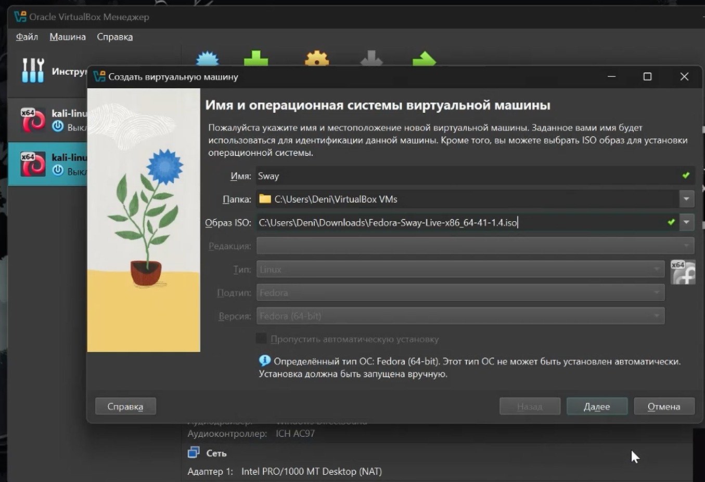
Настраиваем пользователя и и выбираем диск
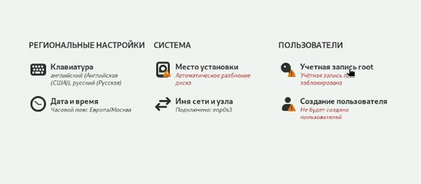
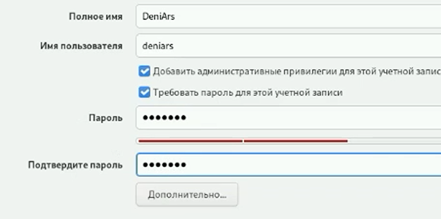
Установка средства разработки
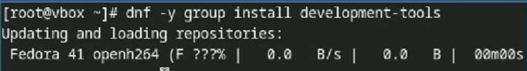
Устанавливаю программу для удобства работы в консоли
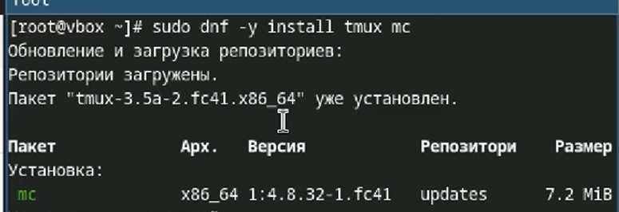
‘+’ еще другой вариант консоли
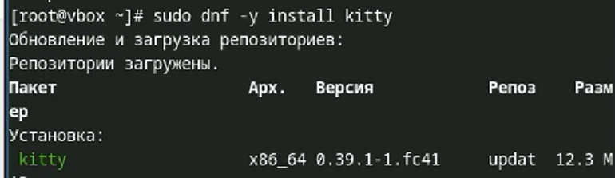
Настраиваю автоматическое обновление
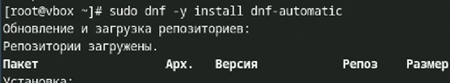
Запускаю таймер
В файле /etc/selinux/config заменяю значение
SELINUX=enforcing
на значение
SELINUX=permissive
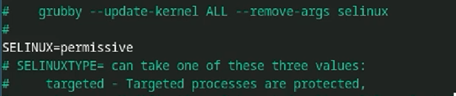
Устанавливаю пакет DKMS
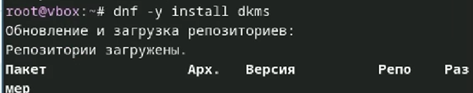
Устанавливаю драйвера
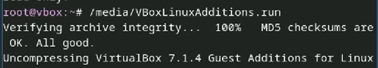
И перезагружаю систему
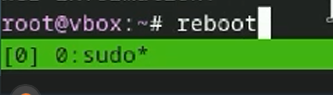
Настройка раскладки клавиатуры:
Создаю папку и конф. файл
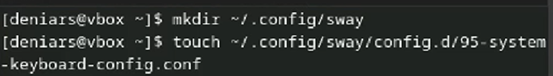
Редактирую файл с помощью команды nano
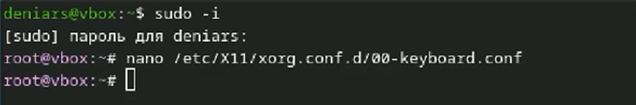
Устанавливаю pandoc
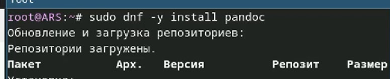
Скачиваю pandoc-crossref и распаковываю файл
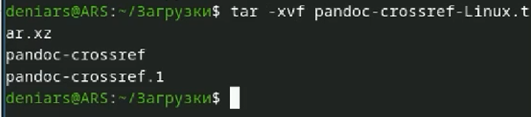
Перемещаю pandoc-crossref в папку bin
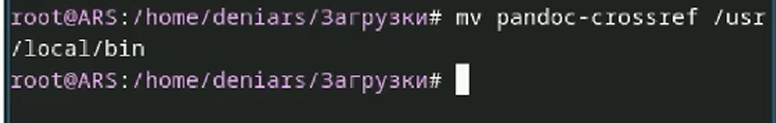
Устанавливаю texlive
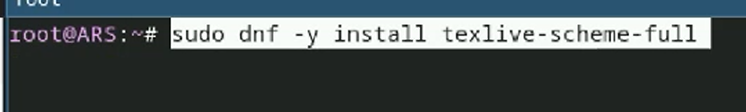
Отыеты на вопросы
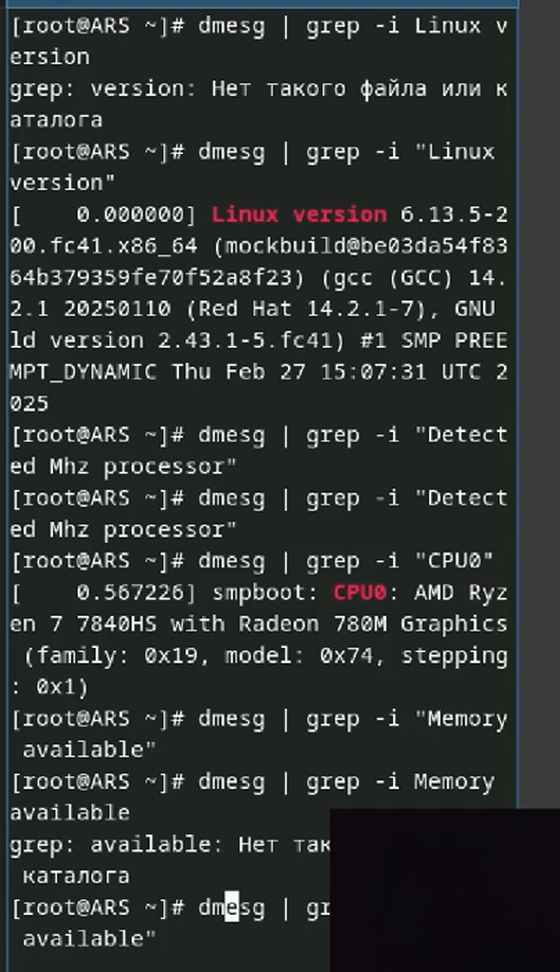
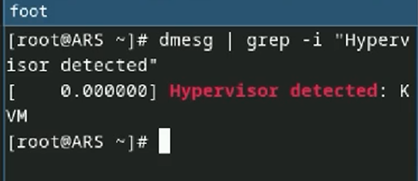
Мы настрили системы для работы.